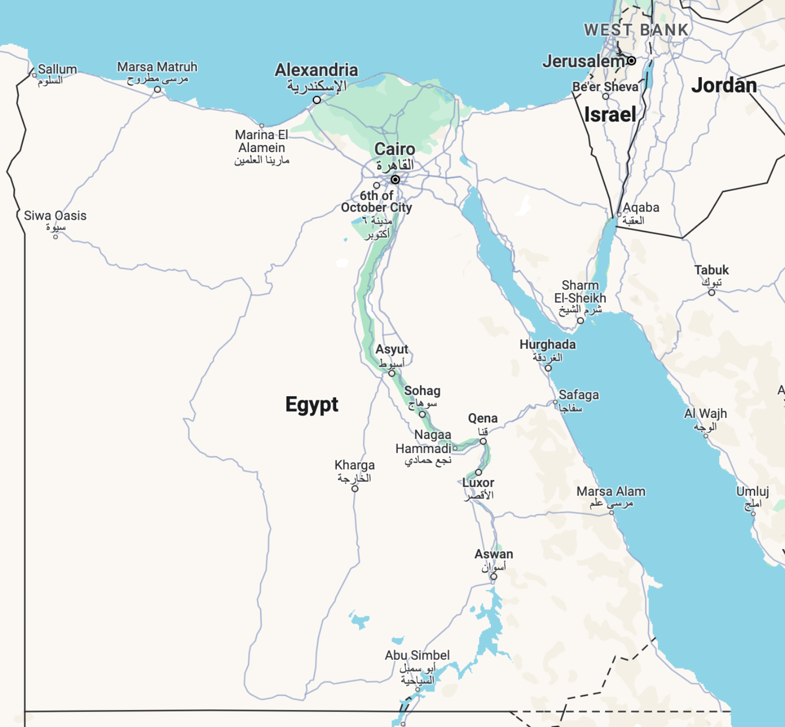
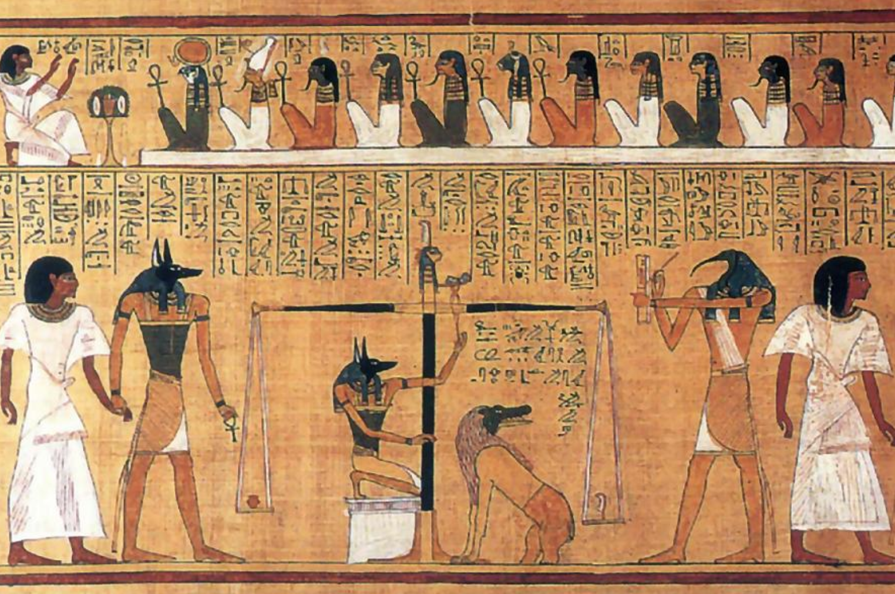
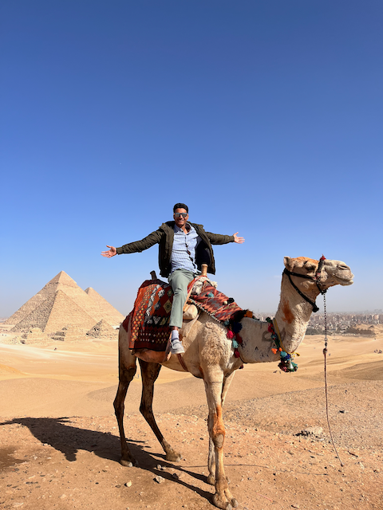
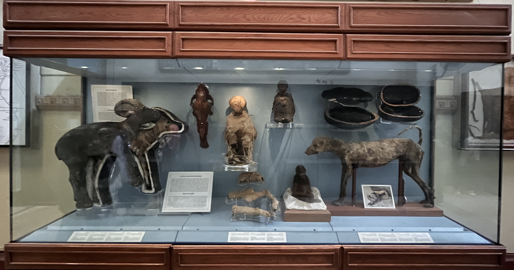
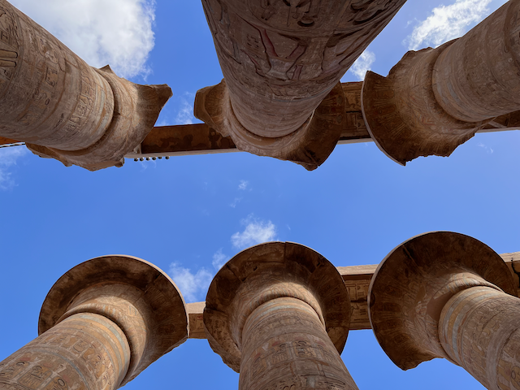
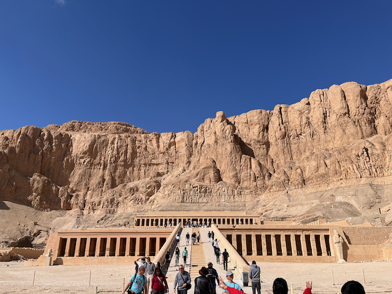
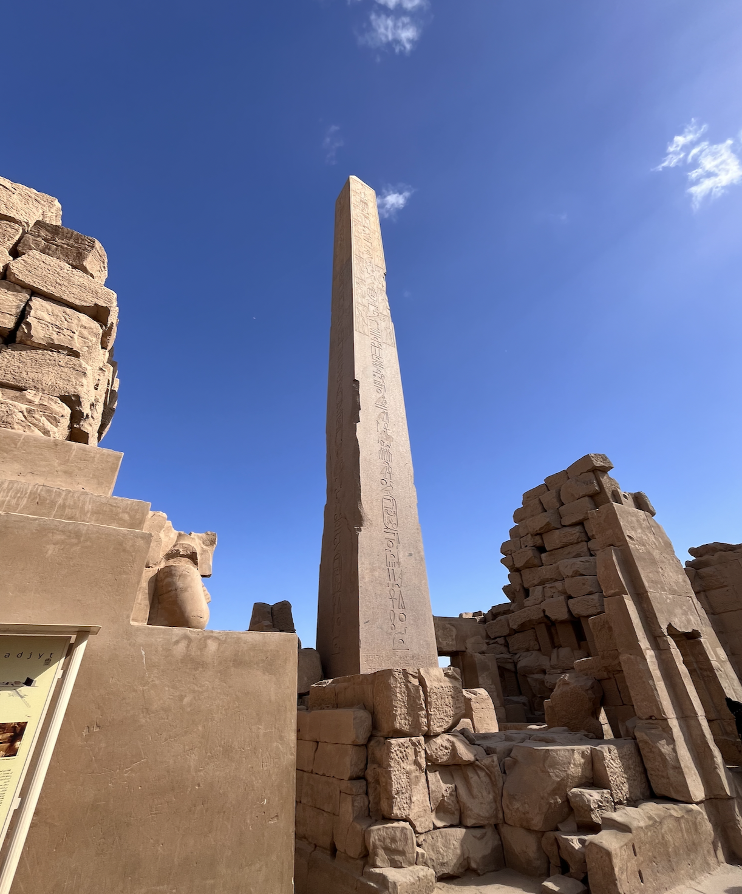
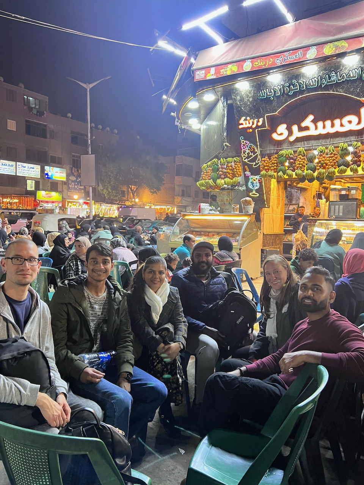

My first day in Cairo, Egypt (specifically in the vibrant district of Zamalek): I witnessed a striking scene. A young woman, donning a hijab and lost in her music, skillfully rollerbladed 🛼 through the bustling streets. It was 11 pm, and she maneuvered amidst a lively mix of cars and motorcycles. This sight made me question my preconceptions of Egypt as a conservative country. My first shock.
The journey to Egypt marked my first step onto the African continent. The Giza Pyramids, celebrated as one of the seven wonders of the world, had always intrigued me, yet I knew little about Egypt’s ancient legacy or its contemporary culture. What was daily life like 4,000 years ago under pharaohs like Tutankhamun, Hatshepsut, and Cleopatra (yes, from Shakespear’s Antony and Cleopatra)?1
To bridge the gap between Egypt’s past and present, I immersed myself in documentaries on History TV18 and Netflix before embarking on this week-long escapade, reminiscent of an Indiana Jones adventure. Soon after, Meenal and I went for week long trip neither of us was fully prepared for.

In Cairo, we stayed in the upscale Zamalek neighborhood, known for its elegant 19th-century apartments, lush streets, and an eclectic mix of cafes and boutiques. Zamalek, transformed significantly after the 1952 revolution, showcases a blend of Egyptian and foreign influences, making it a unique cultural hub.2
Many foreigners who lived in Zamalek left during extended periods of political unrest. These exodus provided an opportunity for more Egyptians to move into the area. Furthermore, Nasser’s nationalisation policies during the 1950s and 1960s led to the confiscation of many estates, which were repurposed for state use, including being transformed into public schools.
Egyptians believed that just like the sun rises in the east and sets in the west, life should exist on the right of river Nile and death (with afterlife) should exist on left of Nile. Thus, Giza and the pyramids are on the left of Nile. Cairo, Luxor, and most other cities are on the east of Nile.
The Giza Pyramids stand as a testament to the ancient Egyptians’ belief in the afterlife. Anubis, the jackal-headed god, guided souls through twelve moral dilemmas, similar to Yaksha in Indian mythology. The heart of the Pharaoh was weighed against a feather to determine his worthiness for the afterlife. This ritual, overseen by Osiris, the god of the afterlife, is depicted vividly in ancient artworks.

In this Papyrus3 print, Anubis is leading the king through twelve questions (top) and then has his heart being weighed against a feather, after which Osiris is allowing him into afterlife.

Camel rides are common in Giza pyramid complex. They are super fun. However, I will highly recommend you visit the Giza complex with a guide and your own car (that is, prebook your adventure). Egyptians are kind and good people, but that is not the time to test it.
Our stay in Giza was at a cozy Airbnb where we woke up with direct view of the Pyramids. Giza is less developed than Cairo but our host, Samer, more than made up for it. If you’re planning a trip, I highly recommend his assistance.
The Egyptian Museum, with its vast collection of antiquities, holds treasures like King Tutankhamun’s artifacts. His reign, though unremarkable, gained fame due to the discovery of his well-preserved tomb by Howard Carter in November 1922.
King Tutankhamun, colloquially known as King Tut, was a pharaoh in the eighteenth dynasty of Ancient Egypt. He ascended the throne as a child at nine years of age and continued till age 19, when he died of unknown causes. Theories range from plague to military coup. While his kingship wasn’t particularly remarkable, he became a news after his tomb was discovered by Howard Carter, a British Egyptologist, in near intact condition.
In Ancient Egypt, animal mummification was as significant as that of humans, serving various purposes. The Egyptians mummified animals in four primary categories: beloved pets buried with their owners, mummies of beef ribs, steaks, joints of meat, ducks, and geese intended as eternal food sources, sacred animals born with sacred symbols revered in religious contexts, and votive offerings like cat mummies presented to the gods as messengers between people and god. In fact, most people brought mummies from a temple store and took it to the priests.4
The mummification process for animals was similar to that of humans, involving desiccation and preservation. The animals were eviscerated, with exceptions like the sacred Mnevis Bull, whose viscera were preserved in canopic jars. The bodies were then dried using natron, massaged with oils, and wrapped in linen for burial. This process, which took up to seventy days, varied slightly depending on the animal’s size.5

The National Museum of Egyptian Civilization, though smaller in scale, boasted a more curated and enriching collection. Its highlight was the chronological display of royal mummies, offering a fascinating glimpse into the reigns and final resting states of Egypt’s ancient rulers. It was a remarkable experience to witness the varied fates of these kings and queens: some bore the scars of war with fractured skulls, while others showcased distinct hairstyles that spoke of their unique identities.
Intriguingly, a few mummies exhibited signs of diseases like plague or polio, evident in their disfigured limbs, providing a poignant reminder of the human vulnerability that even royalty could not escape. I don’t have pictures for this as cameras weren’t allowed to preserve the mummies from light exposure.6
Luxor, once the heart of Ancient Egypt, was our next destination. We started with the Karnak Temple 🏛️, dedicated to Amun Re, the sun god. This architectural marvel, with its massive columns and intricate hieroglyphs, reveals the grandeur of ancient worship practices. The colours on these columns remains after thousands of years, which is remarkable.`

The Valley of the Kings and Luxor Temple, with their rich history, offered insights into royal burials and religious ceremonies. We also visited Hatshepsut’s temple, Egypt’s first female pharaoh.
The ascent of Hatshepsut, Egypt’s first female pharaoh, is a tale of intrigue and ambition. Born in 1507 BCE as the daughter of Thutmose I and his queen Ahmose, Hatshepsut’s path to power was unconventional. Following her father’s death, she married her half-brother, Thutmose II, at a young age. Their union was short-lived, as Thutmose II’s death led to the ascension of their underage son, Thutmose III, to the throne.
Initially, Hatshepsut served as Thutmose III’s regent, but her aspirations went beyond a caretaker role. She claimed her divine right to rule, asserting herself as the daughter of the sun god Amun Re. This bold claim, accepted by the priests, enabled her to seize the pharaoh’s mantle.
Hatshepsut’s reign was marked by prosperity and monumental achievements. She expanded trade with Africa, enriching Egypt with exotic flora and fauna, including giraffes that adorned her temple garden. As a visionary architect, she not only constructed the majestic Hatshepsut Temple but also significantly enhanced the Luxor and Karnak Temples.

Hatshepsut Temple, made by carving limestone mountains.
Her story takes a dramatic turn with Thutmose III, whom she had sent to a military academy, perhaps hoping he would never return. Contrary to her plans, he emerged as a skilled warrior. It’s speculated that he led a coup against Hatshepsut and, after seizing power, attempted to erase her from history. He replaced her images and inscriptions on monuments with his own, although some remnants of her legacy, like the inscription on a tower in her temple, survived his efforts to obliterate her memory.

In some cases, such as this tower, Thutmose III couldn’t obliterate her name because it was written “Daughter of Amun Re, Queen Hatshepsut, presents this to the glorious God Amun Re”. In such cases, he built additional features such as the stone barricade that covered her name at the bottom.
We also went for a hot air balloon ride 🎈 over Luxor. It provided a breathtaking perspective of these ancient sites, allowing us to appreciate their scale and beauty from the skies. It was enthralling!
As our Egyptian adventure neared its end in Cairo, we embarked on a street food tour, delving into a delightful array of local cuisines, beverages, and desserts. The culinary journey started with a traditional Egyptian breakfast, predominantly vegetarian and packed with nutrients. A typical morning meal might include Khoshuri, Egypt’s national dish, or Egyptian bread accompanied by a variety of sauces such as tahini and baba ghanoush.7
Egyptian bakery on the street selling staple bread for breakfast and lunch.
Lunch in Egypt aligns with the return of the household’s breadwinner, typically served between 2 pm and 6 pm. Dinner, if separate from lunch, is often a late-night affair around 2-3 am. This nocturnal dining pattern is reflective of Egypt’s vibrant night culture. Due to the intense daytime heat and desert winds, life in Egypt pulses more vividly after dark. Most shops and markets come alive around noon, buzzing with activity until they wind down around 3 am.
In Egypt, a predominantly Muslim country, public consumption of alcohol is frowned upon. Our encounters with alcohol were limited to a quaint spot in Zamalek and a four-star hotel in Luxor. In stark contrast, smoking shisha (hookah) is a widespread and culturally ingrained practice, readily available in most cafes alongside coffee.
An unexpected and delightful discovery was the popularity of juice shops. These vibrant hangout spots, offering an astonishing variety of 20-30 types of fresh juices, provided a refreshing contrast to my experiences in the US. These juice shops aren’t just about quenching thirst; they serve as social hubs where locals gather in the evenings for lively conversations and ‘gupshup’.

Our street food tour group outside a juice shop. You can guess the popularity by looking at the number of people chilling in the background.
On our last day in Egypt, we visited the Coptic Church and the Al-Azhar Mosque, two sites in Cairo’s rich religious tapestry. Even as a Hindu, I felt peace visiting both the sites. The Coptic Church is a testament to Egypt’s ancient Christian community. Its intricate architecture and revered artifacts reflect a blend of Egyptian and Greco-Roman influences.
Just a short distance away, the Al-Azhar Mosque stood in all its grandeur. It is one of the oldest mosques in Cairo and a beacon of Islamic learning with its wide assembly areas. The mosque’s elegant minarets and detailed Islamic calligraphy were pretty cool.
Just ten days before we visited, Egypt had national elections. The current president, Abdel Fattah El-Sisi, got re-elected. El-Sisi got into power after the millitary coup in 2014. When I asked about the elections, someone said “no comments”. I got curious and learnt that the government claims 90% votes went to El-Sisi amid 67% voter turnout. No one I talked to had voted.
The economy was struggling: people cared a lot about dollars than about Egyptian pounds. For every dollar, my cab driver gave me an exchange rate of $1 = 43 EGP, while the bank exchange rate is $1 = 30 EGP. With high inflation, people are hoarding dollars to protect themselves from incoming catastrophe. It is also not allowed to have to more than $300 for Egyptians, which makes it very hard for them to travel outside Egypt.
El-Sisi’s personal project — a Dubai-like city called New Administrative Capital (NAC) situated 45 kms from Cairo — got disproportionate funding from the government. NAC was designed to reduce congestion from Cairo, which is already one of the world’s most crowded cities. However, because of high rents, uncertain future, and lack of local economic options, the project hasn’t made significant progress.
Reflecting on my trip to Egypt, I’m struck by the contrast between its ancient wonders and modern realities. From the streets of Cairo to the Giza Pyramids and Luxor’s temples, the journey was a deep dive into a rich culture and history.
Museums in Cairo brought ancient stories to life, while the street food tour offered a taste of everyday Egyptian life. The political and economic landscape, glimpsed through discussions about elections and the struggling economy, added a layer of complexity to my understanding of contemporary Egypt.
Leaving Egypt, I felt enriched by the experience, having seen a country balancing its impressive heritage with the challenges of the present.
Cleopatra VII was the last active ruler of the Ptolemaic Kingdom of Egypt. Renowned for her intelligence, political acumen, and allure, she played a pivotal role in the Roman political battles of her time. Alexandria, a major city in Egypt, was the capital of the Ptolemaic Kingdom and Cleopatra’s seat of power.
Cleopatra’s relationship with Julius Caesar began when she sought his support against her brother and co-ruler, Ptolemy XIII. Their alliance quickly turned romantic and political. Caesar’s support helped Cleopatra regain the throne. Their liaison also produced a son, Ptolemy XV, popularly known as Caesarion, whom Cleopatra claimed was Caesar’s heir. After Caesar’s assassination in 44 BC, Cleopatra aligned with Mark Antony, leading to further entanglements in Roman politics, which eventually culminated in their defeat and her subsequent suicide. Cleopatra’s life and reign signified the end of the Ptolemaic dynasty and the beginning of Roman dominion in Egypt.
I didn’t visit Alexandria, though. Some other time.↩︎
Ziad A Akl (Zamalek: Social history of an island, Arham Online): Zamalek was originally built in the 19th century as a place close to the King or Khedive or Wali’s headquarters in Abdeen Palace in Downtown Cairo, where those who worked for the palace could find cheap accommodation proximate to their occupations. At that time, the price of land in Zamalek was cheap compared to other regions in Cairo. Many of the Abdeen Palace service staff bought land in Zamalek. Most of them were from upper Egypt. It appears that Zamalek was an expatriate island from many years ago.↩︎
Papyrus, a cornerstone of ancient Egyptian civilization, was first used around 3000 BCE for writing and making scrolls. Derived from the pith of the Cyperus papyrus plant, it was processed by cutting the stem into thin, flat strips, which were then laid in overlapping rows and hammered flat, producing a durable, flexible writing surface. This innovation facilitated record-keeping, religious texts, and literature.
Scribes used reed brushes or pens with carbon-based ink to write on papyrus. The scrolls, central to administrative, legal, and scholarly work, were often stored in libraries like the famous one at Alexandria. The use of papyrus in Egypt gradually declined with the introduction of cheaper parchment and paper but remains a symbol of the country’s rich cultural and intellectual heritage.
The modern word Paper is actually derived from Papyrus.↩︎
Cats, which were the most common votive offering, were typically “farmed” by temple-permitted locals who snapped their necks when cats grew old enough. Their bodies were then mummified and sold to pilgrims coming to the temple. There was a dark economy: scammers sometimes sold empty caskets to noobs.↩︎
The mummification process has been studied in detail (https://www.si.edu/spotlight/ancient-egypt/mummies) and also been repeated.↩︎
Mummification process is not unique to Egypt — it has been practiced deliberately and naturally in all continents. deliberate mummification was a feature of several ancient cultures in areas of America and Asia with very dry climates. The Spirit Cave mummies of Fallon, Nevada, in North America were accurately dated at more than 9,400 years old. Before this discovery, the oldest known deliberate mummy was a child, one of the Chinchorro mummies found in the Camarones Valley, Chile, which dates around 5050 BC. Currently, the oldest known naturally mummified human corpse is a severed head dated as 6,000 years old, found in 1936 AD at the site named Inca Cueva No. 4 in South America.↩︎
Baba ghanoush is very similar to another Indian dish called Baigan bharta.↩︎